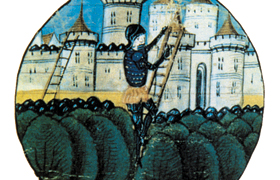

Lezione 8  Crociate
Crociate

Urbano II nel 1095, durante il concilio di Clermont, invitò i cavalieri e i nobili a partire per Gerusalemme in un pellegrinaggio armato che liberasse la Terrasanta dalla minaccia turca. C’era, tra le ragioni che spinsero gli europei alla conquista della Palestina, una ragione di natura religiosa, di cui la Chiesa si fece promotrice. Ma ci furono anche altri motivi di natura economica, politica e sociale. La conquista di nuove terre era innanzi tutto una promessa di ricchezza e potere per i figli cadetti delle famiglie feudali, esclusi dall’eredità che spettava ai primogeniti. Per i cavalieri, divisi, litigiosi, violenti, la crociata costituiva un obiettivo comune di unione. Partire per l’impresa in Terrasanta permetteva loro di interrompere le liti e gli atti di violenza interna in nome dell’etica cristiana e del volere di Dio. Per i mercanti occidentali, e in particolare per le repubbliche marinare di Venezia, Genova e Pisa, le crociate erano un’ottima occasione per espandere e consolidare in Oriente la rete di traffici e scambi commerciali, e dunque per arricchirsi. Anche per i poveri, gli avventurieri, gli oppressi dal giogo feudale le crociate costituivano un’occasione per far fortuna e costruirsi una nuova vita, migliore. Infine, le crociate e gli stati crociati che vennero formati in Palestina offrirono uno sbocco alla crescita demografica dell’Occidente.